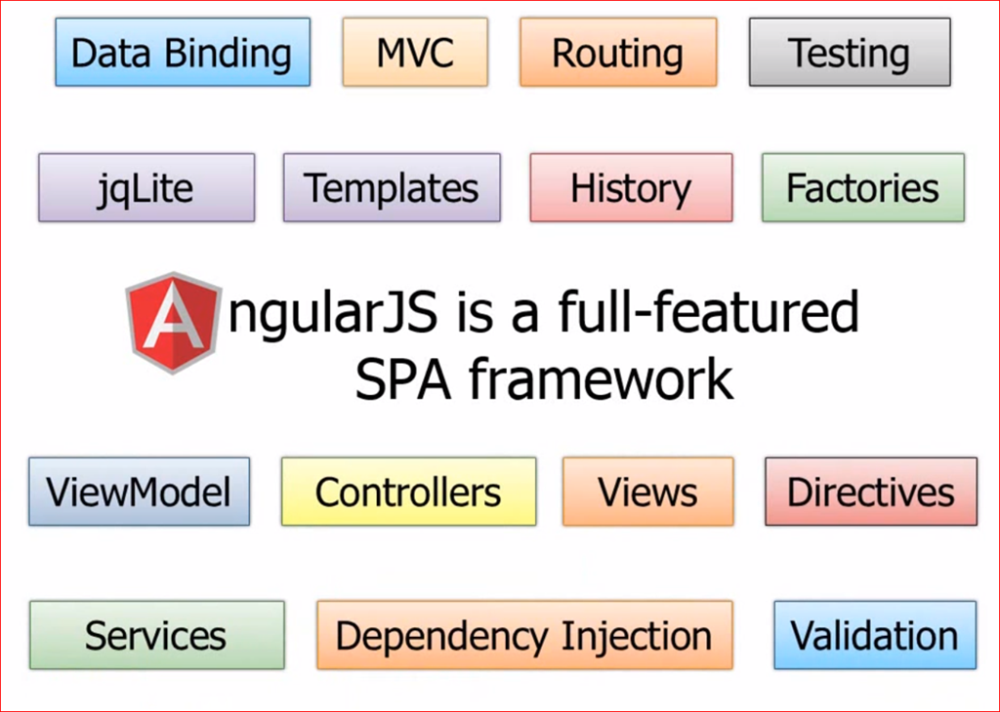
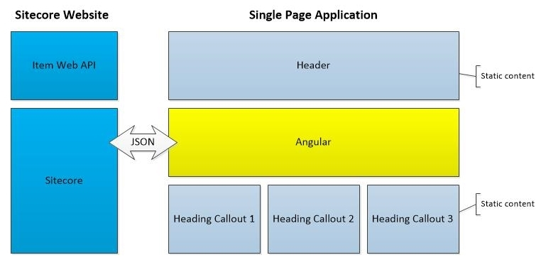
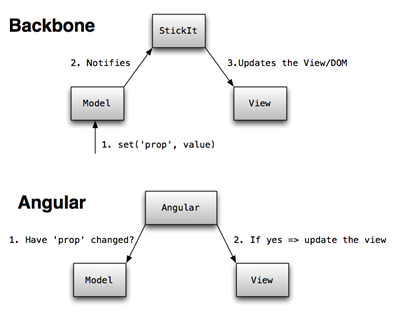

Angular JS
HTML Enhanced Web Apps
Created by - Vinayak Patil
Heads Up
SPA - Single Page Applications
Advantages ?
- Makes your app as ‘snappy’ as a native app.
- Reduces load on server.
- More freedom to manipulate content.
Disadvantage ?
- Relies entirely on JavaScript.
Course Structure
- Beginner
- Intermediate to Advanced
Agenda: For Beginners
- Why AngularJS?
- Angular Bird's eye view
- Controllers and Scopes
- Using Directives
- Using Filters
- Using Services
- Modules & Routing
- Form Validations
- Angular Seed
- Exercise: Blog
Why AngularJS?
MVC done right
Write less code
Teaches new HTML tricks
Dependency Injection
Well defined roles
- DOM manipulation inside directive
- Scope manipulation in controller
- Reusable components as services
Unit Testing Ready
- Loosely coupled components makes testing easy
- End to End Testing like selenium
- Cross browser and device
How does angular work ?

MVC big picture
Controllers and Scope
Using Angular Controllers, we are able to map a section of html to a AngularJS Scope
<div ng-controller="MainCtrl">
...
</div>
<script>
function MainCtrl($scope) {
}
</script>
Controller is used to augment scope object
- Scope is an object in memory
- Scope can be nested
- We can create a child scope in 3 ways
- Child scope uses same scope as parent
- Child scope inherits from parent scope
- Child scope is isolated from parent
Using Directives
A directive is how AngularJS extends HTML
<html ng-app>
</html>
A directive can be a html attribute
<tabs>
<pane title="Tab1">....</pane>
<pane title="Tab2">....</pane>
</tabs>
A directive can be a html element
<div class="ng-init: foo='bar'"></div>
<div ng-bind="foo"></div>
A directive can be a html class
Built in directives
- Event Directives
- Others
Event Directives
- ngClick
- ngDblClick
- ngMouseDown
- ngMouseUp
- ngMouseEnter
- ngMouseLeave
- ngChange
- Others
Other Directives
- ngApp
- ngBind
- ngModel
- ngController
- ngHide
- ngShow
- ngRepeat
Demo Directives
Can I create my own directive ?
Yes! Will see this in intermediate to Advanced course
Using Filters
What are filters for ?
- Modify output
- Formatting
- Sorting dataset
- Filtering dataset
How to use filter?
{{name | filter_name}}
Built in filters
- uppercase/lowecase
- number/currency/date
- json
- orderBy/limitTo/filter
Demo Filters
Using Services
Dependency Injection
DI puts the AngularJS Framework to work for you.
DI goes and gets the services you request so that your controllers are clearly defined and testable.
Injector
The injector is a service locator. There is a single injector per Angular application. The injector provides a way to look up an object instance by its name.

Diagram is from AngularJs.org
Built in Services
- $http
- $resource
- $q
- $compile
- $timeout
- $exceptionHandler
- $cacheFactory
- $cookieStore
- $window
- $routeParams ...
$http
function MainCtrl($scope, $http) {
$http.get('foo.json')
.then(function(res) {
$scope.items = res.data;
}, function(err) {
alert(err.message);
});
} Modules
Application Module
angular.module('App', []);
Calling the module method, with two parameters, initializes the module.
var app = angular.module('App');
Calling the module method, with one parameter, returns the named module.
Including Modules
angular.module('App', ['ngRoute']);
In the second parameter you can include an array of modules you would like to add to your app module.
Routing
angular.module('App', ['ngRoute'])
.config(function($routeProvider) {
$routeProvider
.when('/', {
templateUrl: 'partials/home.html',
controller: 'HomeController'
})
.when('/new', {})
.when('/:id', {});
});
We can map a url fragment to controller and view in route configuration
Form Validations
Angular makes validating form super simple.
CSS Classes
- ng-valid
- ng-invalid
- ng-pristine
- ng-dirty
Binding
- A form is an instance of FormController.
- Similarly, control is an instance of NgModelController.
Steps to remember before starting validations
- Add 'novalidate' attribute to your form
- Form and input controls should have name attribute
formName.input.property
Adding validation rules ?
- required
- ng-minlength
- ng-maxlength
- ng-pattern
- url
- Custom validators
Usage
feedbackForm.email.$valid
Other properties
- $pristine
- $dirty
- $invalid
- $error